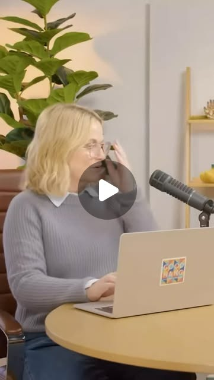

Instagram Reel

Big fans Jon Hamm and @amypoehler share their love for @shoresyhockey on the ...
video transcript (enriched by ClaudeClaw)
Summary
[CAPTION]
Big fans Jon Hamm and @amypoehler share their love for @shoresyhockey on the latest episode of @goodhangwithamy 👀
[VIDEO]
What are you watching that's making you laugh. And it can be, it doesn't have to be You know what I watched recently that that really made me laugh that I think yo...
[CAPTION]
Big fans Jon Hamm and @amypoehler share their love for @shoresyhockey on the latest episode of @goodhangwithamy 👀
[VIDEO]
What are you watching that's making you laugh? And it can be, it doesn't have to be You know what I watched recently that that really made me laugh that I think you would really like? Yeah. It's a show out of Canada called Heated Revenue. No, it's not that. That's a bit. That's called a bit. Um but it does have to do it is Canadian, it does have to do the hockey. It's a show called Shoresy. Oh, I love Shoresy. That is making me laugh. And you know what it's also making me do? Yeah. Cry. It's making it. He's a really gr it's a great show. Okay. I've only watched clips of Shoresy, because you know, I t I I I've seen him on the six episodes a season. Oh, really? Oh, I love that. You can watch all of them in a half a day. And uh him okay, let's watch. So Jared Keiso. Okay, tell me more. Uh uh was on a show, created a show called Letter Kenny. Yes. Which is a very, very Canadian show. Yes. Uh but very specifically funny. Maybe not to everyone's taste, as as as as things should be. Yeah, comedy is a very subjective. Subjective. And the reason he did this was because he came to LA and they were like, You're too Canadian, you're too this, you're too that. And he's like, Fuck it, I'm gonna go back on and I'm gonna make a I'm gonna make my own show. Mm-hmm. Um and he did. And then he spun it off into this thing, Shorty, and it's Shorty's about this um kind of local hero legend. He plays on the local men's hockey team. And it's kind of the point of pride for the small town in northern Ontario that they live called Sudbury. And the c over the course of the of the series, they they win the championship, then he becomes a coach and he tries to teach the kids. And it's it's a tremendous show because it it highlights most of the uh people in in power that are running things are women. Mm-hmm. Many of them are First Nations, uh indigenous Canadians. And it's not made a big deal of, it just is. Yeah. And his relationship to all of that, while being this bruiser, is very soft. Yes, yes. I mean, I've seen this real high-pitched voice, and it's really kind of funny. And he always interrupts people. They're always and their overlapping dialogue is really funny. It's a tremendously ambitious show that delivers. So I I'm trying to pump their tires a little bit. I wanna find though the scenes where he's um hitting on uh Oh, when he hits on on the girl who he who he really loves. It's so I'll make you so. Shorty and Laura. I'll make you so happy. Okay, that's the stuff that I see, and it's so funny. It's such a funny move. It's also deeply sentimental and heartfelt. I agree. That was I was like, oh, I want to watch the show because his move, his comedy move is like I'm gonna love you so hard. And she's just like, I'm not interested, and it's so good. Sure, you're gonna want to enjoy the perks that come along with that. It's summer and sunday. Stop fucking play Adel Carmen. I need to be sure that you're sure. Oh. So good. So good. Such a good show. Okay, we gotta check that out.
View original on Instagram Reel →